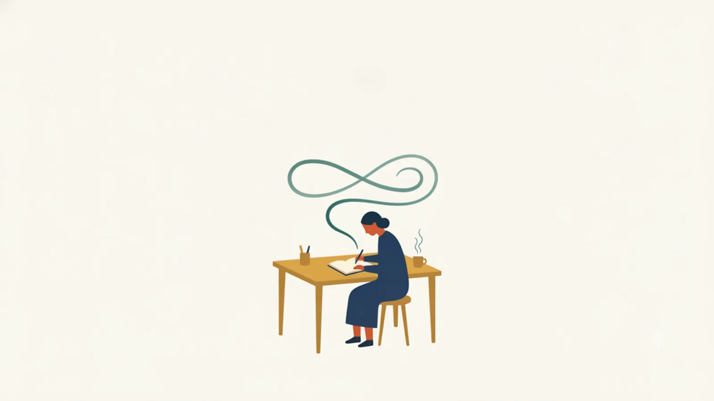

No.001
ひとりで書く
ジャーナリング
Journaling
⏱ 所要 3〜15分
- ひとことで
- 頭に浮かぶことを評価せずにそのまま書き出し、自分の内面を観察する習慣。
- どんな技法か
- 決まったテーマや自由なテーマで、思考や感情を紙に書き出す実践の総称。「書く瞑想」とも呼ばれ、頭の中を外に出すことで思考が整理され、自分を客観視できるようになる。数分から始められ、あらゆるリフレクションの土台になる基本技法。
- やり方
- 静かな場所でタイマーを3〜10分セットする
- テーマを決める(例:「今、気になっていること」)か、完全に自由に書く
- 手を止めず、誤字も文法も気にせず書き続ける(書くことがなければ「書くことがない」と書く)
- 時間が来たら読み返し、気づいたことを1行メモする
- 毎日または週数回、同じ時間帯に続ける
- こんなときに
- 朝や夜の習慣として。頭がごちゃごちゃしている時
- 由来
- 日記による内省は古代から存在するが、心理学的手法としては Ira Progoff が1966年に始めた「インテンシブ・ジャーナル・メソッド」が現代的ジャーナリングの源流の一つ。近年はマインドフルネスの文脈で再普及した。
- たしかめられ方
- 筆記による開示の効果研究(Pennebaker 以降の数百件)が理論的支柱。感情の言語化(affect labeling)が扁桃体の反応を抑えるという神経科学的知見(Lieberman et al. 2007)もある。
コツ「うまく書こう」としないことが唯一にして最大のルール。読み返して自分を批判し始めたら、それ自体を次のジャーナリングのテーマにする。